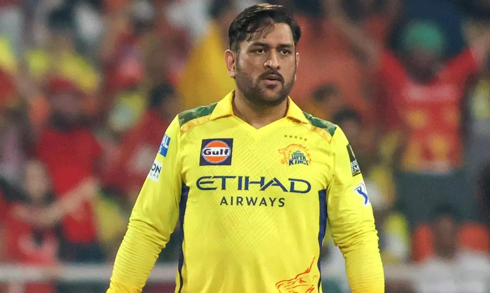

Mahendra Singh Dhoni is an Indian professional cricketer who plays as a right-handed batter and a wicket-keeper. Widely regarded as one of the most prolific wicket-keeper batsmen and captains and one of the greatest ODI batsmen, he represented the Indian cricket team and was the captain of the side in limited overs formats from 2007 to 2017 and in test cricket from 2008 to 2014. Dhoni has captained the most international matches and is the most successful Indian captain. He has led India to victory in the 2007 ICC World Twenty20, the 2011 Cricket World Cup, and the 2013 ICC Champions Trophy, being the only captain to win three different limited overs ICC tournaments. He also led the teams that won the Asia Cup in 2010, 2016 and was a member of the title winning squad in 2018. In the Indian Premier League (IPL), Dhoni plays for Chennai Super Kings (CSK), leading them to the final on ten occasions and winning it five times (2010, 2011, 2018, 2021 and 2023 ) jointly sharing this title with Rohit Sharma . He has also led CSK to two Champions League T20 titles in 2010 and 2014.
website: Link